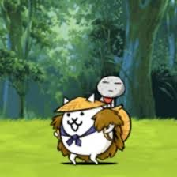
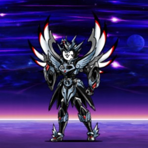
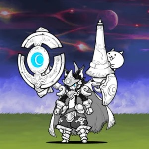
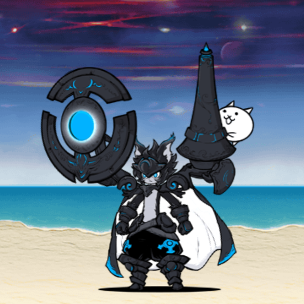

The Toxic Guardian
Kasa Jizo
A forest-dwelling jizo statue with a cat rider, known for wearing down tough enemies with toxic damage and weaken effects.
Four standout Uber Rares, one ultimate lineup: Kasa Jizo, Cosmo, Lunos, and Dark Lunos. Here's why each one earned a spot on the roster — and how to get the most out of them in battle.




Battle Cats has hundreds of Uber Rares, but this lineup was picked for covering four completely different roles: a toxic support that wears down tanky enemies, a cosmic heavy-hitter built for late-game pressure, a moonlit specialist for Traitless-heavy stages, and its darker ultra evolution that pushes the same kit even further. Together they cover almost every situation you'll run into.
Scroll down for a closer look at each one, plus strategy notes and a lore gallery for the full picture.
Four units, four playstyles — click into Strategy and Gallery below for more on each.
A forest-dwelling jizo statue with a cat rider, known for wearing down tough enemies with toxic damage and weaken effects.
An armored figure wreathed in starlight and shadow — one of the most visually striking Ubers, built to anchor a late-game frontline.
A lunar warrior wielding a crescent shield and a staff-bound familiar, standing guard wherever Traitless enemies gather.
Lunos reforged in shadow — same crescent shield, same watchful familiar, but a harder-hitting evolution for players ready to push further.
General playstyle notes for each unit — tap a card to expand.
A strong early pickup for applying Toxic and Weaken to tanky enemies. Pair it with steady DPS units to finish off targets once they're worn down, rather than relying on it alone for damage.
Best deployed once your economy can support its cost. Use it as a frontline anchor backed by support casters rather than sending it in solo.
Shines on Traitless-heavy stages. Bring shield-breaking or barrier-piercing support alongside it to clear the way for its follow-up damage.
The natural upgrade path once Lunos is leveled up. Treat it as a straight power spike for the same team role — same job, harder hits.
Note: these are general playstyle pointers, not exact in-game numbers — double-check current stats and abilities in-game before relying on them for a specific stage.
A closer look at the artwork, with a little flavor text for each.
Deep in an ancient forest, a stone guardian awoke — carrying a small cat who now watches over every path it takes.
Cosmo drifts through the space between stars, armor forged from collapsed light and wings spun from solar wind.
Lunos answers only to the moon, standing watch where the sky meets the sea, staff-bound familiar always at the ready.
Dark Lunos rises from the same shore as its predecessor — changed by something the light never touched.
Jizo, Cosmo, Lunos, and Dark Lunos are just the start — mix and match with your own favorites.